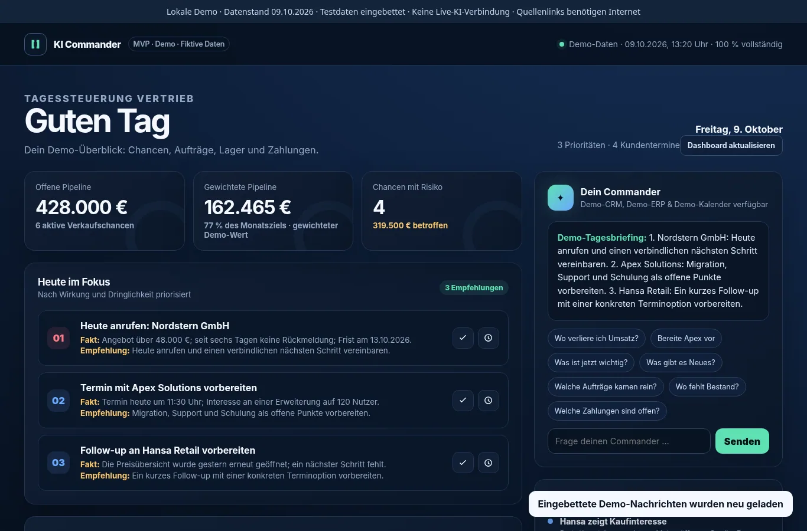
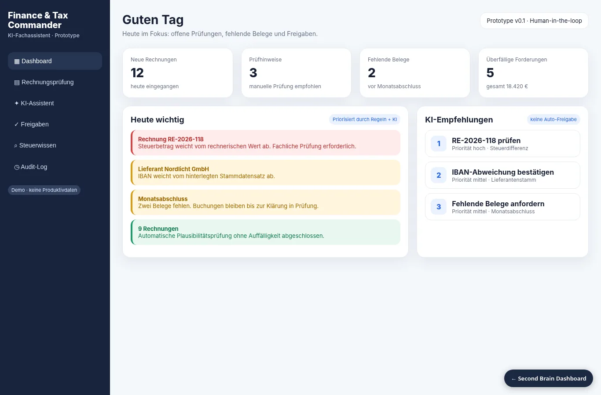
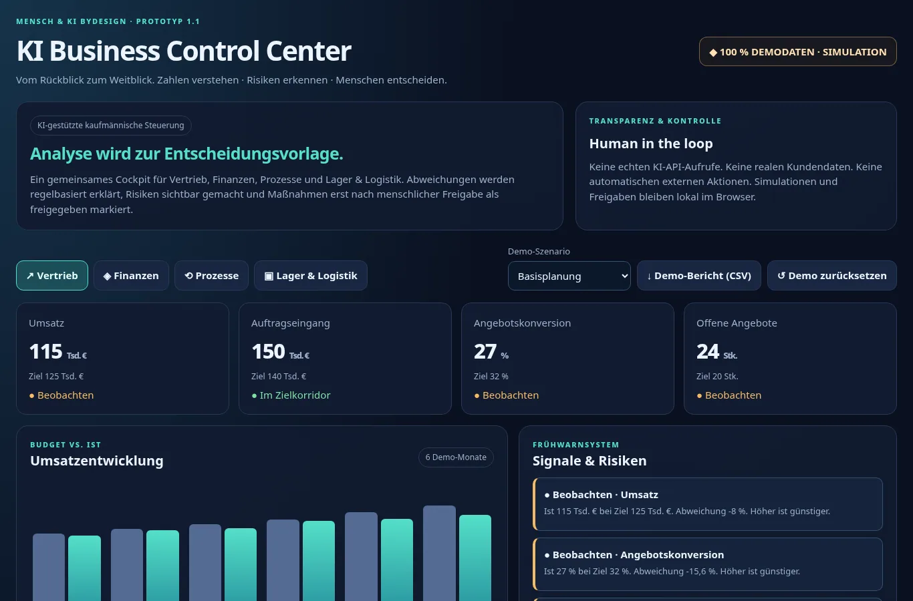
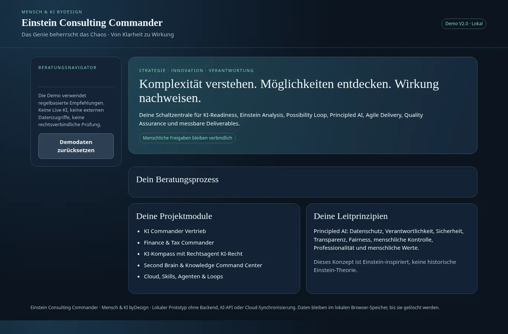
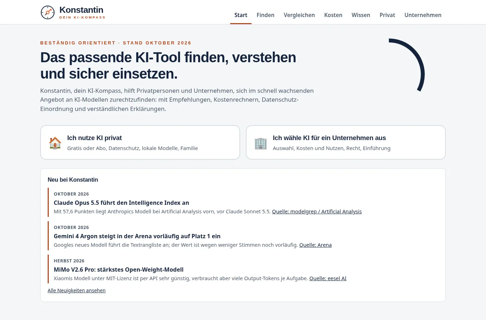

Human & AI byDesign · KI-Handbuch
Was möchten Sie wissen?
Alle Begriffe finden Sie im Handbuch. Die Startseite zeigt bewusst kein vollständiges Glossar.
Wenn Kennzahlen aus verschiedenen Systemen stammen, Abläufe Zeit kosten und Entscheidungen auf unvollständigen Informationen beruhen, fehlt Unternehmen der klare Blick auf das Wesentliche. Ich verbinde kaufmännisches Prozesswissen mit geeigneter KI, um Daten nutzbar zu machen und Entscheidungen besser vorzubereiten.
Mein Ansatz: bestehende Prozesse verstehen, wirtschaftliche Potenziale bewerten und Lösungen im kleinen, überprüfbaren Rahmen erproben.
Business · Finance · Controlling · KI-Transformation
Viele Unternehmen verfügen über wertvolle Daten und erfahrene Mitarbeitende. Was fehlt, ist oft die Verbindung zwischen Informationen, Prozessen und einer verlässlichen Entscheidungsgrundlage.
Kennzahlen müssen aus mehreren Quellen zusammengetragen werden. Abweichungen werden spät erkannt.
Ansatz: Datenflüsse ordnen, KPIs sichtbar machen.Manuelle Übergaben, doppelte Eingaben und Medienbrüche erschweren den Arbeitsalltag.
Ansatz: Abläufe prüfen, gezielt verbessern und automatisieren.Ohne belastbare Informationen lassen sich Prioritäten, Kosten und nächste Schritte schwer begründen.
Ansatz: Szenarien, Frühindikatoren und kontrollierte KI-Vorschläge nutzen.Mehr als 20 Jahre in Buchhaltung, Rechnungswesen, Controlling und Systemadministration prägen meine Beratung. Ich betrachte einen KI-Anwendungsfall deshalb auch aus Sicht von Datenqualität, Abstimmung, Verantwortung, Wirtschaftlichkeit und Alltagstauglichkeit.
Ich verbinde fundiertes Rechnungswesen und Controlling mit dem Verständnis für Systeme, Daten und neue KI-Anwendungen. Entscheidend ist für mich nicht, was technisch beeindruckt, sondern was im Unternehmensalltag nachvollziehbar funktioniert.
Meine Stärke liegt an der Schnittstelle zwischen kaufmännischen Anforderungen, Unternehmenssystemen und neuen KI-Möglichkeiten.
BWL-Studium mit Schwerpunkt Rechnungswesen und Controlling. Über 20 Jahre Berufserfahrung in Buchhaltung, Rechnungswesen, Controlling und Systemadministration – heute ergänzt durch strategische und praktische Arbeit mit KI.
Ich kenne Prozesse sowohl aus der Perspektive der Anwenderinnen und Anwender als auch aus der Sicht von Daten, Systemen, Kosten und Steuerung.
Ich verbinde betriebswirtschaftliche Analyse mit technischem Verständnis und überprüfbaren KI-Prototypen. Ziel ist eine Lösung, die im Alltag funktioniert und deren Nutzen sich anhand von Kennzahlen nachvollziehen lässt.
Von der Ausgangslage über den Use Case bis zur Qualitätssicherung dokumentiere ich Entscheidungen, Voraussetzungen und Grenzen.
Mein Schwerpunkt liegt dort, wo wirtschaftliche Steuerung, Geschäftsprozesse und technische Systeme zusammenwirken.
Controlling, Kennzahlen, Budget-Ist-Vergleiche, Unternehmensprozesse und Entscheidungsvorbereitung.
B2B-Vertrieb, Aufträge, Kundenmanagement, Angebotsprozesse und kommerzielle Planung.
Kosten, Liquidität, Rechnungsprozesse und kontrollierte KI-Fachassistenz – keine eigenständige Steuerberatung.
Wareneingang, Warenausgang, Bestandsübersicht, Bedarfsermittlung und Schnittstellen zur Warenwirtschaft.
Durchlaufzeiten, Fehlerquoten, Systemintegration, Automatisierungspotenziale und organisatorische Zusammenarbeit.
Second Brain, Notion, vernetztes Projektwissen, Qualitätssicherung und Wissenstransfer.
Mein Fokus: Nicht nur vergangene Zahlen darstellen, sondern Abweichungen erklären, Frühindikatoren sichtbar machen und bessere Entscheidungen vorbereiten. KI liefert Vorschläge, die Verantwortung bleibt bei den Menschen.
Kompetenzen anhand dokumentierter Konzepte und Prototypen; keine behaupteten Zertifizierungen oder produktiven Einführungen.
Individuell beraten. Wirtschaftlich denken. Zukunft gestalten. Mein Ansatz beginnt beim Geschäftsproblem, nicht beim KI-Werkzeug.
„Das Genie beherrscht das Chaos.“
Unternehmen besitzen häufig mehr Daten, Erfahrungen und Wissen, als sie sinnvoll miteinander verbinden können. Nicht zusätzliche Technologie allein schafft Fortschritt, sondern die Fähigkeit, Menschen, Prozesse, Informationen und geeignete KI zu einem tragfähigen Ganzen zu verbinden.
Ich ersetze keine Mitarbeitenden und nicht pauschal bestehende Unternehmenssysteme. Ich helfe, vorhandene Stärken besser zu nutzen, betriebswirtschaftliche Potenziale nachprüfbar zu machen und fundierte Entscheidungen vorzubereiten.
Der Mensch bleibt verantwortlich für Zielsetzung, Beurteilung, Freigabe und Steuerung.
Geschäftsproblem, Kosten und Wirkung sind die Ausgangspunkte.
Menschen, Daten, Prozesse und Organisation gemeinsam betrachten.
Transparenz, Datenschutz, Prüfbarkeit und menschliche Freigaben.
Testfälle, messbare Kriterien und überprüfbare Arbeitsergebnisse.
Geschäftsprobleme, Engpässe und Schnittstellen sichtbar machen; Anforderungen und messbare Zielgrößen definieren.
Wirtschaftlichkeit, Risiken, Investitionsbedarf und geeignete Pilotvorhaben strukturiert vergleichen.
ERP-/EDI-Integration, APIs, Cloud-VPS, n8n, externe KI-APIs und sichere Betriebs- und Freigabekonzepte.
Kleine, überprüfbare Anwendungen mit Demo-Daten, Qualitätskriterien und menschlichen Entscheidungspunkten.
Wissen vernetzen, Quellen prüfen, Qualitätsstatus sichtbar halten und Skills, Loops und Agenten nachvollziehbar einsetzen.
Teams einbinden, neue Arbeitsweisen erproben, Verantwortungen klären und Wissen übergeben.
Ich betrachte das Zusammenspiel von Menschen, Prozessen, Daten, Technologie, Wirtschaftlichkeit und Governance. So vermeiden wir isolierte Insellösungen.
Transparenz, Datenschutz, Fairness, Zuverlässigkeit und menschliche Freigaben sind Qualitätsanforderungen der Lösung – keine nachträgliche Dekoration.
Sie müssen keine KI-Fachbegriffe kennen. Wir klären gemeinsam, was Ihr Unternehmen braucht, erproben eine passende Lösung und prüfen, ob sie einen messbaren Unterschied macht.
Was läuft heute nicht rund?
Ergebnis: Klares Problem und messbares ZielWelche Verbesserung ist sinnvoll – mit oder ohne KI?
Ergebnis: Bewertete Optionen und wirtschaftliche EmpfehlungFunktioniert die Idee im Arbeitsalltag?
Ergebnis: Ein überschaubarer Pilot mit verantwortlichen PrüfpunktenWird es messbar besser und sicher nutzbar?
Ergebnis: Entscheidung über Verbesserung oder AusbauWählen Sie eine Phase. Angezeigt werden Ergebnis und bewusster Entscheidungspunkt eines beispielhaften KI-Piloten.
Ein überprüfbares Zwischenergebnis, eine dokumentierte Entscheidung und die klare Zuständigkeit für den nächsten Schritt. Systeminnovation und verantwortungsvolle KI begleiten alle sieben Phasen.
Für alle, die tiefer einsteigen möchten: Diese neun Fachbausteine unterstützen die Analyse, Umsetzung und Qualitätssicherung. Wir nutzen nur die Prüfungen, die zur jeweiligen Aufgabenstellung passen.
Organisatorische, technische, wirtschaftliche und kulturelle Bereitschaft anhand von sieben Dimensionen bewerten.
Ergebnis: Readiness-Scorecard (0–4), Risiken, Prioritäten und Go-/Klärungsentscheidung.
Geschäftsproblem, Ursachen, Prozesse, Systeme, Schnittstellen und Mitarbeitendenperspektive untersuchen. Fakten, Annahmen, Interpretationen, Prognosen und Fragen trennen.
Ergebnis: Messbare Problemdefinition und Prozesslandkarte.
Annahmen hinterfragen, Perspektiven wechseln, pragmatische, innovative und transformative Alternativen entwerfen – ausdrücklich auch ohne KI.
Ergebnis: Vergleich von Nutzen, Aufwand, Risiken und menschlicher Wirkung.
Datenschutz, Verantwortlichkeit, Sicherheit, Erklärbarkeit, Fairness, menschliche Kontrolle, professionelle Sorgfalt und menschliche Werte berücksichtigen.
Ergebnis: Dokumentierte Qualitäts- und Governance-Prüfpunkte; Rechtsfragen zur fachlichen Klärung.
ERP/EDI, APIs, Modelle, Cloud/On-Premises/Hybrid, n8n, Datenflüsse, Hosting und Zugriffskontrollen passend kombinieren.
Ergebnis: Architekturvergleich, Datenfluss und nachvollziehbare Betriebsannahmen.
Scope, Stakeholder, Backlog, User Stories, Verantwortlichkeiten, Iterationen, Definition of Done und Freigaben festhalten.
Ergebnis: Pragmatischer Umsetzungsplan mit überprüfbaren Lieferergebnissen.
Fachlichkeit, Datenqualität, Zuverlässigkeit, Robustheit, Sicherheit, Fairness und Fehlerbehandlung anhand von Testfällen prüfen.
Ergebnis: Testkatalog und Korrektur- bzw. Freigabeentscheidung.
Wirtschaftliche, ökologische, soziale und organisatorische Nachhaltigkeit mit überprüfbaren Annahmen betrachten.
Ergebnis: Bewertung von Folgekosten, Ressourcen und langfristiger Betriebsfähigkeit.
Zielerreichung, Qualität, Akzeptanz, Innovation und Nachhaltigkeit anhand eines Vorher-Nachher-Vergleichs bewerten.
Ergebnis: Impact Scorecard und Entscheidung: GO · IMPROVE · HOLD · STOP.
Bewertungsmaßstäbe sind anpassbare Projektmethoden. Ein guter Gesamtscore ersetzt keine zwingenden Sicherheits-, Rechts- oder Qualitätsanforderungen; fachliche Rechtsberatung wird dadurch nicht geleistet.
Ausgewählte Eigenentwicklungen, Konzepte und funktionsnahe Demonstratoren – transparent nach Anwendungsbereich und Entwicklungsstand. Ziel sind überprüfbare Arbeitsergebnisse, nicht unbelegte Erfolgsversprechen.
Meine Schwerpunkte: Vertrieb, Finance und betriebswirtschaftliche Unternehmenssteuerung.

GeschäftsproblemVorgänge, Verkaufschancen und Tagesaufgaben liegen häufig in getrennten Systemansichten.
LösungsansatzEin Dashboard bündelt Prioritäten, Kundenereignisse, Aufträge und nächste Handlungsvorschläge.
Möglicher NutzenMehr Übersicht und nachvollziehbare Priorisierung.
Entwicklungsstand: Original-HTML-Prototyp mit Demonstrationsdaten; keine produktive Kundenimplementierung belegt.

GeschäftsproblemBelege, Prüfschritte und offene Klärungen verursachen manuellen Abstimmungsaufwand.
LösungsansatzEine zentrale Oberfläche unterstützt Rechnungssichtung, Prüfhinweise und Freigabeschritte.
Möglicher NutzenStrukturierte Kontrolle und transparentere Bearbeitungsstände.
Entwicklungsstand: Original-HTML-Prototyp mit Demonstrationsdaten; keine produktive Kundenimplementierung belegt.

GeschäftsproblemBestell-, Lager- und Steuerungsinformationen müssen fachbereichsübergreifend eingeordnet werden.
LösungsansatzDas System zeigt Zusammenhänge zwischen Aufträgen, Beständen und betriebswirtschaftlicher Steuerung.
Möglicher NutzenFrühzeitige Orientierung bei Abweichungen und Entscheidungen.
Entwicklungsstand: Original-HTML-Prototyp mit Demonstrationsdaten; keine produktive Kundenimplementierung belegt.
Weitere Beispiele zeigen meine Arbeit an Beratungsprozessen, Assistenzsystemen, Wissensmanagement und neuen Anwendungsideen.

Ein strukturierter Beratungsprozess mit Entscheidungs- und Qualitätsprüfpunkten.

Ein ganzheitlicher KI-Kompass mit Modellvergleichen, Kosten- und Cloud-Entscheidungshilfen, dem Chatbot „Frag Konstantin“ sowie dem Rechtsagenten KI-Recht.
Lokale Original-HTML-Version des KI-Kompasses mit gekennzeichnetem Offline-Chat-Demo-Modus. Der produktive KI-Chat benötigt eine geprüfte n8n-Anbindung.
Ein System, zwei Assistenten: Frag Konstantin (lokale Chat-Demo) und Rechtsagent KI-Recht (separater Fachbereich innerhalb des Kompasses).
Konstantin mit Assistenten testen ↗Internes KI-gestütztes Wissensmanagement- und Qualitätssicherungssystem für Wissen, Quellen, Projekte und Freigaben. Original und Screenshots sind geschützt.
Konzept und Prüfstruktur zur Kontrolle von Quellen, Freigaben, Dubletten und Qualitätsstatus.
Strukturierter, freigabeabhängiger Transfer von KI-Wissen zwischen Arbeitsumgebungen.
Architektur und Hosting als Arbeitsergebnis; Original-Blueprint nur intern.
Das KI-Lexikon bietet Definitionen; das Innovationsnetzwerk zeigt, wie fachliche Fähigkeiten projektbezogen zusammenwirken.
Ein kleines, durchsuchbares Handbuch mit Begriffen aus meiner Wissensbasis – für den schnellen Einstieg oder die fachliche Vertiefung.
Human & AI byDesign · KI-Handbuch
Alle Begriffe finden Sie im Handbuch. Die Startseite zeigt bewusst kein vollständiges Glossar.
Eine vernetzte Projektorganisation: Die Teamzusammenstellung folgt dem Kundenproblem, nicht einer starren Tool-Landschaft.
Fachkonzept, Rechnungswesen, Controlling, Kennzahlen und betriebswirtschaftliche Bewertung.
Architektur, Prototyping, Schnittstellen, Automatisierung, Datenflüsse, Sicherheit und technische Qualität.
Leadership, Befähigung, Kommunikation, Qualitätssicherung und fachlich zuständige Risiko- und Rechtsprüfung.
Der Fachbereich definiert Anforderungen und prüft den Nutzen. Technologieverantwortliche entwerfen und bauen. Governance-Verantwortliche bewerten Risiken. Die Entscheidung über Freigaben bleibt bei den dafür benannten Menschen.
Individuelle Teamprofile und personenbezogene Angaben werden nur nach ausdrücklicher Freigabe veröffentlicht.
Sie möchten sich austauschen, eine Frage stellen oder mehr über meine Arbeit erfahren? Ich freue mich über Ihre Kontaktaufnahme.
Ein persönlicher Austausch ist oft der beste Anfang. Schreiben Sie mir gerne – ganz unverbindlich und ohne vorbereitete Projektanfrage.
Die geschäftlichen Kontaktdaten werden vor der Veröffentlichung ergänzt.
Impressum und Datenschutzerklärung finden Sie im Footer. Diese Website ist noch ein unveröffentlichter Entwurf.
Interner Bereich: Die geschützten Arbeitswerkzeuge werden nicht über GitHub Pages bereitgestellt. Für den internen Zugang wird ein separater, passwortgeschützter Server benötigt.
2 · Eigene Testnotiz (optional)
Ergebnisse stammen aus vorbereiteten Beispieldaten. Es findet keine externe KI-Abfrage, Datenübertragung oder produktive Aktion statt.